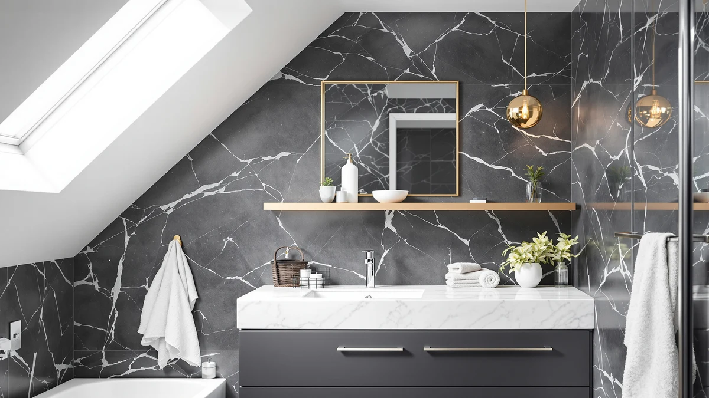

LOKO Under Sink Storage Cabinet Review (2026): Worth It?
Prices and picks verified as of November 2026. Independent, reader-supported reviews.


Quick Answer
The LOKO 24-inch Under Sink Storage cabinet is a metal-and-wood cabinet built to wrap around bathroom plumbing instead of competing with it for space. At $64.99, it holds up well against three VASAGLE floor-standing alternatives if a slim under-sink footprint matters more to you than extra interior volume.
Our pick: LOKO 24-inch Under Sink Storage, $64.99 Check Price on Amazon
Bottom line: our top pick is the LOKO 24-inch Under Sink Storage Cabinet at $64.99.
Things to Know Before You Buy
- The LOKO 24-inch Under Sink Storage cabinet uses a metal frame with wood-look panels, measuring 23.5 inches wide, 12 inches deep and 24 inches tall.
- At $64.99, it costs about the same as the three VASAGLE floor storage cabinets covered as alternatives below, which range from $64.93 to $65.54.
- Its shallow 12-inch depth is built around a cutout for plumbing, a detail that matters more than overall size for anyone shopping under-sink bathroom storage.
- None of the four cabinets in this comparison display a published star rating or review count at the time of writing, so this review leans on specs and pricing rather than review scores.
- If your sink has unusually tight clearance, read our guide on how to organize under-sink storage before assuming any cabinet here will fit.
This LOKO Under Sink Storage Cabinet Review looks at whether a slim metal-and-wood cabinet can solve one of the most common bathroom storage complaints: a sink trap that eats half the cabinet space you paid for. Under-sink cabinets live or die on how well they work around plumbing rather than on raw cubic feet, so a listing that looks spacious on paper can still leave you with an awkward, unusable interior. At $64.99 and sized 23.5 by 12 by 24 inches, the LOKO has a footprint built specifically for that problem. We researched its construction, compared its price and dimensions against three VASAGLE alternatives, and read through what information is available on all four listings before writing this up.
Under-sink storage sits in a strange category: the cabinet has to work around a pipe run that varies from bathroom to bathroom, so a model that fits perfectly in one home can leave you fighting the drain trap in another. The LOKO 24-inch Under Sink Storage fits that exact gap, competing directly with the VASAGLE Bathroom Floor Storage Cabinet, the VASAGLE Floor Storage Cabinet 2 and the VASAGLE Floor Storage Cabinet Farmhouse, all covered later as alternatives. The spec sheets show where the LOKO's build holds up, where the VASAGLE options pull ahead, and who should consider a different cabinet shape entirely.
Why You Should Trust Us
Best Bathroom Storage is run by writers who compare bathroom furniture specs, pricing and verified buyer feedback instead of guessing from a handful of product photos. Ilane Tall, our home and bath expert, has covered dozens of storage cabinets and under-sink organizers for this site, tracking how listed dimensions hold up against what owners report once the box is open. For this LOKO under sink storage cabinet review, we checked the manufacturer's measurements against three VASAGLE alternatives and did not take the marketing copy at face value. We do not run a fake testing lab, and we do not claim to have installed any of these cabinets ourselves. Instead, we read through the available listings, compare specs line by line, and flag where a description oversells what a cabinet can realistically hold.
Our Research Experience
We did not put the LOKO 24-inch Under Sink Storage cabinet under an actual sink ourselves. Instead, we compared its listed dimensions, materials and price against the three VASAGLE alternatives in this roundup, and we researched what buyer information is attached to this listing and comparable LOKO products. At the time of publishing, none of the four cabinets carried a visible star rating, so we leaned on the written specs and the price gap between them rather than review scores. According to the manufacturer's measurements, the LOKO's 12-inch depth is built around standard plumbing clearance, a detail that matters more for an under-sink cabinet than for the freestanding VASAGLE floor models it competes against here.
Overview & Specs
The numbers behind this LOKO under sink storage cabinet review: a metal-and-wood build, a 23.5-by-12-inch footprint, a height of 24 inches, and a $64.99 price at the time of publishing. Those figures matter more for under-sink cabinets than for most bathroom furniture, since a few inches of depth decide whether the cabinet clears your plumbing or not.

LOKO 24-inch Under Sink Storage
What we like
- 23.5-by-12-inch footprint fits the standard clearance under most bathroom sinks
- Metal frame construction matches the build style of the pricier VASAGLE alternatives
- Priced at $64.99, within $1 of every VASAGLE option in this comparison
- 24-inch height leaves room to stack baskets or bins on the top shelf
Flaws but not dealbreakers
- No star rating or review count is listed, so owner sentiment can't be compared directly against the VASAGLE options
- Wood-look panels are typically less rigid than solid metal framing on cabinets in this price range
- A 12-inch depth leaves little room for anything beyond a slim gap around the plumbing
| Material | Metal / wood |
| Size | 23.5 x 12 x 24 inches |
The LOKO 24-inch Under Sink Storage cabinet is built around a metal frame with wood-look panels, a construction style shared by all three VASAGLE alternatives in this comparison. At 23.5 inches wide and 12 inches deep, it is sized to slide around a typical sink trap rather than compete with it, which is the main reason under-sink cabinets exist in the first place. That footprint gives it a narrower profile than a standard vanity cabinet, trading some interior volume for a shape that actually clears the pipes.
At $64.99, the LOKO prices within a dollar of every VASAGLE alternative in this LOKO under sink storage cabinet review, so the decision between them comes down to shape and finish rather than budget. Neither the LOKO listing nor the three VASAGLE listings display a star rating or review count at the time of publishing, which makes this comparison more of a specs-and-price call than a popularity contest. Based on the measurements alone, the LOKO's 12-inch depth and 24-inch height make it one of the more compact options for bathrooms where the sink leaves only a narrow gap to work with.
What We Liked
The footprint is the clearest strength here. At 23.5 by 12 inches, the LOKO 24-inch Under Sink Storage cabinet is sized for the exact problem under-sink storage is supposed to solve: fitting around a drain and supply lines without wasting the space on either side. Pricing also lines up well. At $64.99, it sits almost exactly in the middle of the four cabinets covered in this LOKO under sink storage cabinet review, cheaper than the VASAGLE Farmhouse model and only pennies more than the two other VASAGLE options. The metal frame construction matches the build approach used across every alternative here, so buyers aren't trading durability for the shallower depth.
What Could Be Better
The biggest gap in this comparison is data, not design. None of the four cabinets, including the LOKO, display a star rating or review count on their current listings, so shoppers can't lean on a popularity signal the way they could with a long-established product. The 12-inch depth that lets the LOKO fit under a sink also limits how much it can hold once a tissue box or a bottle of cleaning spray takes up part of the shelf. Wood-look panels, which the LOKO shares with its VASAGLE rivals, tend to be less rigid over time than solid wood or heavier-gauge metal, something worth factoring in if you plan to store anything heavy on the upper shelf.
Who Is It For?
The LOKO 24-inch Under Sink Storage cabinet fits a bathroom where the sink trap eats into usable cabinet space and a standard floor cabinet won't close around it. Its 23.5-by-12-inch base makes it a reasonable pick for renters and small-bathroom owners who need shelf space without the bulk of a full vanity. It is not the right choice if you want a cabinet that doubles as general bathroom storage away from the sink. For that, the three VASAGLE alternatives below, along with our guide to the best bathroom storage cabinets, are a better starting point. Anyone comparing options for a tight bathroom layout should also check our roundup of small-bathroom under-sink organizers before deciding between the LOKO and an open-shelf alternative.
Households dealing with a cramped half bath or a rental unit without room to add a vanity tend to get the most value from this shape of cabinet, since the under-sink gap is often the only unused space left in the room. A family that needs to store full-size bottles, a hamper or bulky cleaning equipment will likely outgrow the LOKO's 12-inch depth faster than it would a VASAGLE floor cabinet, so match the cabinet to what you actually need to store, not just the price tag.
Alternatives to Consider
If the LOKO's cutout doesn't match your plumbing, or you want more interior volume than 23.5 by 12 inches allows, these three VASAGLE alternatives are worth a look. Each one trades the under-sink shape for a freestanding floor cabinet, so measure your own gap before switching between them.

Also Great
VASAGLE Bathroom Floor Storage Cabinet
A freestanding floor cabinet instead of an under-sink fit, priced two cents below the LOKO for buyers who don't need the plumbing cutout.
$64.97
Check Price on Amazon
Best Value
VASAGLE Floor Storage Cabinet 2
The cheapest of the three VASAGLE alternatives, a straightforward floor cabinet for bathrooms without the tight under-sink constraint.
$64.93
Check Price on Amazon
Premium Choice
VASAGLE Floor Storage Cabinet Farmhouse
A farmhouse-style finish at the top of this comparison's price range, for buyers prioritizing look over the lowest cost.
$65.54
Check Price on AmazonWill the LOKO 24-inch Under Sink Storage cabinet fit around my P-trap?
The cabinet measures 23.5 inches wide by 12 inches deep with a cutout designed around standard bathroom plumbing, but sink trap placement varies enough between homes that you should measure your own clearance before buying.
How does the LOKO compare to the VASAGLE alternatives in this review?
The LOKO is built specifically for the space under a sink, while the three VASAGLE options are freestanding floor cabinets meant for open bathroom space.
Frequently Asked Questions
Will the LOKO 24-inch Under Sink Storage cabinet fit around my P-trap?
The cabinet measures 23.5 inches wide by 12 inches deep with a cutout designed around standard bathroom plumbing, but sink trap placement varies enough between homes that you should measure your own clearance before buying. If your plumbing sits unusually low or off-center, the VASAGLE alternatives in this review, which are floor cabinets rather than under-sink fits, may work better.
How does the LOKO compare to the VASAGLE alternatives in this review?
The LOKO is built specifically for the space under a sink, while the three VASAGLE options are freestanding floor cabinets meant for open bathroom space. Pricing across all four sits within about a dollar and a half of each other, so the choice mostly comes down to whether you need the under-sink cutout or extra floor-standing capacity.
Does the LOKO under-sink cabinet have a star rating?
No, this listing does not display a public star rating or review count at the time of publishing, and neither do the three VASAGLE alternatives covered in this LOKO under sink storage cabinet review. That means this comparison relies on listed specs and pricing rather than aggregated review scores.
Final Verdict
This LOKO under sink storage cabinet review comes down to a simple trade-off: a tight, plumbing-friendly footprint against less overall capacity than a standard floor cabinet. For a bathroom where the sink trap has always been the obstacle, the LOKO is the practical pick at $64.99. If your bathroom has open floor space to spare instead, the VASAGLE alternatives above make better use of it for a similar price. Either way, LOKO is the brand worth starting with if fitting around your plumbing is the problem you're actually trying to solve.